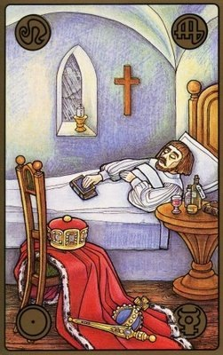

Cuento
El zar y la camisa
León Tolstói

Un zar estaba enfermo y dijo:
- Daré la mitad de mi reino a quien me cure.
Entonces, se reunieron todos los sabios y empezaron a discutir cómo curar al zar. Nadie sabía que hacer. Sólo un sabio afirmó que se podía curar al zar.
- Si se encuentra a un hombre feliz -dijo-, se le quita la camisa y se le pone al zar, éste se curará.
El zar mandó que buscaran a un hombre feliz por todo su reino, pero por mucho que sus emisarios cabalgaron por todos sus territorios, no pudieron encontrarlo. No había ni uno que estuviese satisfecho de todo. Uno era rico, pero estaba enfermo; otro gozaba de buena salud, pero era pobre; otro era rico y gozaba de buena salud, pero su mujer era malvada, o bien sus hijos; todos tenían algún motivo de queja.
Un día, a última hora de la tarde, el hijo del zar pasaba junto a una pequeña isba y oyó a alguien que decía:
- Gracias a Dios he trabajado bastante, he comido cuanto necesitaba y ahora me voy a la cama. ¿Qué más puedo pedir?
El hijo del zar se alegró, ordeno que le quitasen la camisa a ese hombre, que le diesen una cantidad de dinero a modo de compensación, todo el que quisiera, y que llevaran la camisa al zar. Los emisarios fueron a ver al hombre feliz y quisieron quitarle la camisa; pero ese hombre feliz era tan pobre que ni siquiera tenía camisa.
En clase:
- Una vez leído el cuento, vamos a determinar los siguientes elementos narrativos:
- Personajes
- Tiempo
- Espacio
- Propósito del autor
Dato curioso: El zar y la camisa es un cuento corto que narra una historia ocurrida en Rusia durante la época de los zares cuando los ayudantes o colaboradores de estos buscaban por todos los medios posibles servir oportuna y gratamente a sus aristócratas jefes. Es un relato que refleja el valor de las cosas simples por medio de un hombre sencillo pero feliz.